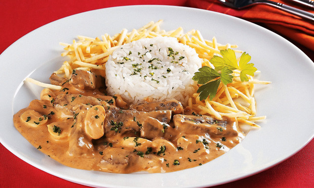

Strogonoff de carne

Ingredientes:
- 400g de carne (filé mignon, chã de dentro ou alcatra)
- Pimenta
- Cominho
- Sal
- 1/2 cebola ralada
- 1 caixa e meia de creme de leite
- 3 colheres (sopa) de catchup
- 3 colheres (sopa) de extrato de tomate
- 1 colher (sopa) de mostarda
- Óleo para fritar
Modo de preparo (carne):
- Corte a carne selecionada em tirinhas, tempere com a pimenta, cominho e sal (eu coloco 1 ou 2 pitadas de cada, no máximo).
- Deixe descansar a carne por 20 minutos para apurar o gosto.
- Coloque óleo suficiente para fritar poucas quantidades de tirinhas (7 ou 8), esquente bem o óleo.
- Comece a fritura com poucas tirinhas para que o óleo não vire uma sopa, retire as tiras e reserve.
- Não deixe fritar muito para que a carne não fique dura.
Modo de preparo (molho):
- Troque o óleo da panela e refogue a cebola ralada.
- Depois de dourada, jogue todas as tirinhas de carne dentro da panela e mexa.
- Frite por 3 minutos e jogue na panela o creme de leite, catchup, extrato de tomate e mostarda.
- Deixe ferver um pouco, sempre misturando.
- irva com arroz branco e batata palha.
